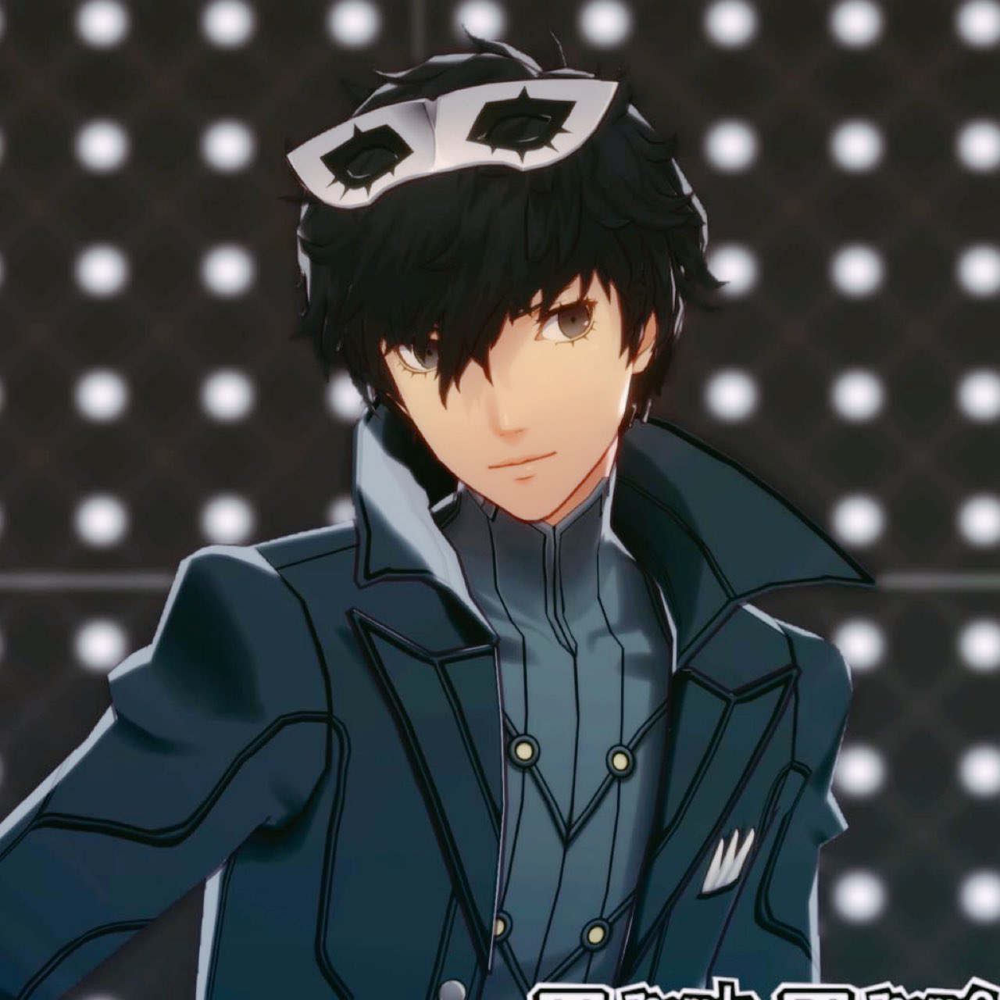
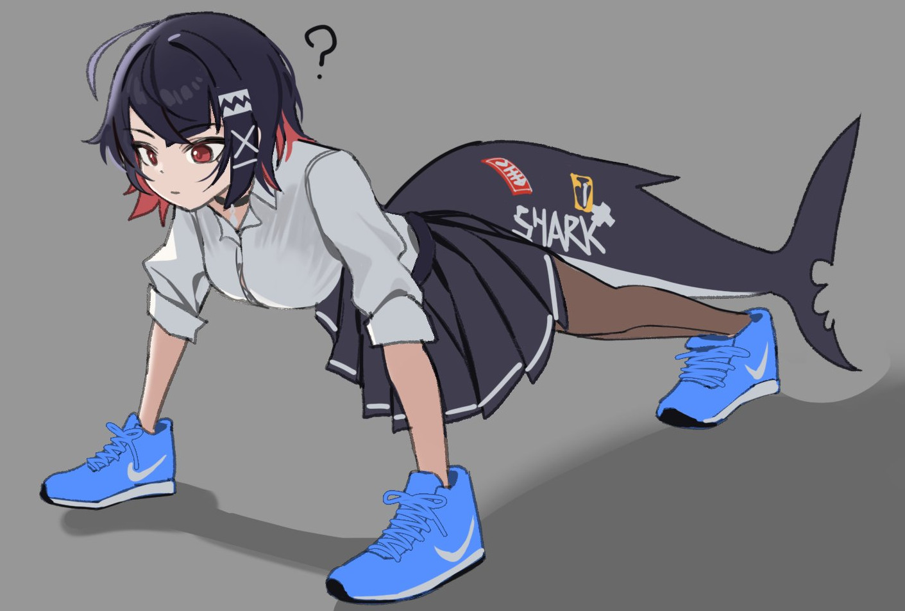

Natural de Curitiba, Paraná. Estudante de Ciência da Computação, amador de Blender, aspirante a programador de jogos e talvez desenvolvimento Front-end, e parcialmente cronicamente online. Tenho só 20 anos atualmente e não vou virar o Walter White de dizer onde moro (Rua das Rolas, 67, Novo Mundo, Curitiba, Paraná, 81020-500). Ao descer pra baixo, você saberá melhor quem sou e o que eu faço.
Conheci a franquia em 2021 atraves do Persona 5 Vanilla, meu amigo começou a jogar e comecei a entrar na franquia de forma realmente peculiar. Desde de então me tornei meio maluco pela franquia e um defensor ferrenho do 5 (Não ouse falar mal dele perto de mim!)"

Se tem um personagem que eu adoro é esse piá. Atualmente tenho cerca de 14 mil imagens relacionado ao Ren. Não apenas isso, fiquei 4 longos anos implorando pra Deus e Epic que pra que podesse jogar com ele no fortnite (Deu frutos). Sei muitas coisas sobre ele, pode perguntar se quiser.

Nunca fui muito fã de gacha, mas ZZZ acabou sendo uma grande excessão. Conheci em 2025 por recomendação de um amigo, mas antes mesmo já vinha sendo fisgado pelo jogo, seja pela fanarts e coisas... meio estranhas da comunidade. Com o tempo meio que aprendi como funciona e a desgraça que é perder no 50/50 pela Nekomata. Ellen Joe best girl btw.
Alem desses dois que eu citei, também faço um verdadeiro passeio em jogos dos mais diversos generos. Alguns dos meu jogos que gosto bastante é Metaphor: Refantazio, Nier Automata, Red Dead Redemption 2, alguns Final Fantasy e etc. Mas meu genero favorito mesmo é o RPG, como dá pra perceber.